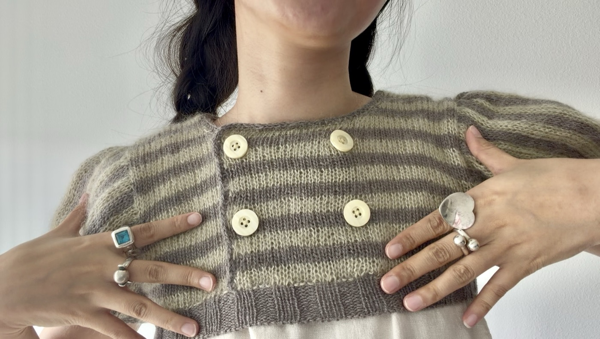

01
Sample palette
Dusty Moose + Fennel Seed
- Knitting for Olive MerinoDusty Moose · fingering · 100% merino
- Knitting for Olive Soft Silk MohairFennel Seed · lace · 70% mohair / 30% silk · held double